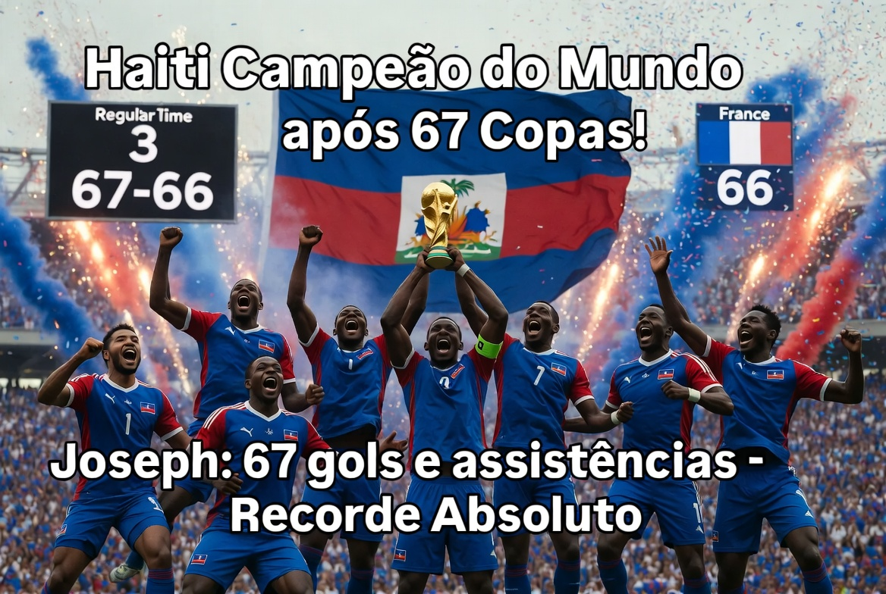

Uma das melhores finais da história
Por:Os protagonistas
Um jogo muito disputado acabando 3 a 3 depois de uma campanha impressionante da historia do haiti e campeã depois de 67 copas do mundo e 67 partidas, joseph é artilheiro da copa batendo um recorde de 67 gols e assistencias, depois de perder para a escocia, surgi uma reviravolta inesperada não perdendo nenhum jogo depois e terminando em primeiro do grupo eles são campeãos da copa jogando contra a frança e ganhando nos penaltis de 67 a 66.